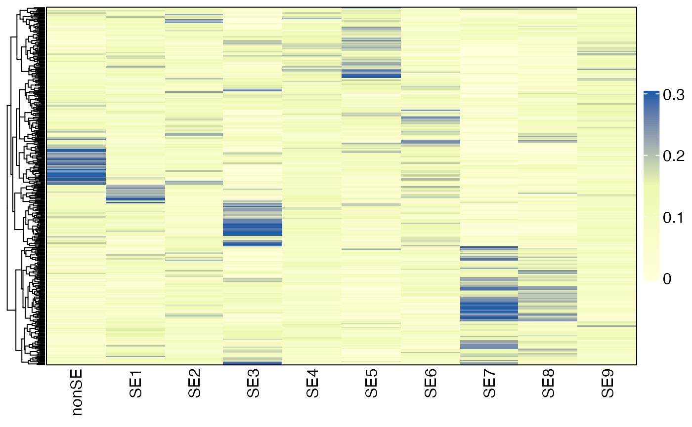

Recovery of Spatial Ecotypes from Bulk Gene Expression Data
Source:vignettes/Recovery_Bulk.Rmd
Recovery_Bulk.RmdOverview
In this tutorial, we will demonstrate how to infer spatial ecotype (SE) abundances from bulk RNA-seq data. Specifically, we will infer SE abundances from RNA-seq data of TCGA melanoma samples. The gene expression matrix is available at SKCM_RNASeqV2.geneExp.rds, which is a Transcripts Per Million (TPM) matrix obtained from the PanCanAtlas.
First load required packages for this vignette
Loading bulk expression of TCGA melanoma samples
drive_deauth() # Disable Google sign-in requirement
drive_download(as_id("14QvmgISxaArTzWt_UHvf55aAYN2zm84Q"), "SKCM_RNASeqV2.geneExp.rds", overwrite = TRUE)## TCGA-3N-A9WB-06 TCGA-3N-A9WC-06 TCGA-3N-A9WD-06 TCGA-BF-A1PU-01
## A1BG 381.0660 195.182 360.8790 176.3990
## A1CF 0.0000 0.000 0.7092 0.0000
## A2BP1 0.0000 0.000 6.3830 1.2987
## A2LD1 250.1980 160.755 97.1986 163.2340
## A2M 2209.5200 169237.000 18257.9000 6716.4500
## A2ML1 7.2698 0.000 0.0000 7.7922
## TCGA-BF-A1PV-01
## A1BG 216.8470
## A1CF 0.0000
## A2BP1 0.0000
## A2LD1 60.8727
## A2M 1740.5800
## A2ML1 0.5977Tab-delimited files can be efficiently loaded into R using the
fread function from the data.table
package.
SE deconvolution
The DeconvoluteSE function will be used to infer SE
abundances in bulk tissues. Users can utilize the default model for
estimating the abundance of predefined SEs or apply a custom model to
infer the abundance of newly defined SEs from bulk gene expression data.
Before prediction, the gene expression data will be log2-transformed (if
the max value is greater than 80) and normalized to have a mean of 0 and
unit variance for each gene.
The default model is trained on pseudobulk gene expression data and is capable of predicting the abundances of nine predefined SEs, along with a NonSE group. The NonSE group primarily represents cancer cells and cells that do not belong to any SEs. The predicted abundances of SEs and NonSE will sum to 1 within each sample.
Note: 1) The SE abundances are comparable across different samples, allowing users to analyze SE distribution patterns in various conditions. 2) Due to the varying number of cell states within each SE, direct comparisons of abundance between different SEs and NonSE may not be meaningful. The SEs represent distinct spatial multicellular communities, each composed of a unique combination of cell types.
Using default model
sefracs <- DeconvoluteSE(bulkdata, scale = TRUE)
head(sefracs)## NonSE SE01 SE02 SE03 SE04
## TCGA-3N-A9WB-06 0.19380234 0.05372667 0.16735600 0.12581663 0.07216666
## TCGA-3N-A9WC-06 0.05293689 0.13901340 0.08427617 0.08372047 0.04243859
## TCGA-3N-A9WD-06 0.27200075 0.17114795 0.06288761 0.05641549 0.10166721
## TCGA-BF-A1PU-01 0.16899510 0.13618971 0.06501306 0.09269615 0.17313296
## TCGA-BF-A1PV-01 0.12078283 0.06921834 0.05970319 0.16813008 0.11059648
## TCGA-BF-A1PX-01 0.21398415 0.04019509 0.08906215 0.04499893 0.08561680
## SE05 SE07 SE08 SE10 SE11
## TCGA-3N-A9WB-06 0.06884572 6.495692e-02 4.610809e-03 0.16471168 0.08400658
## TCGA-3N-A9WC-06 0.05623098 6.781589e-03 3.162253e-01 0.15964259 0.05873404
## TCGA-3N-A9WD-06 0.02720647 8.345475e-02 9.239064e-02 0.07760029 0.05522884
## TCGA-BF-A1PU-01 0.13404194 3.330034e-16 3.330034e-16 0.02543647 0.20449461
## TCGA-BF-A1PV-01 0.14669963 1.677658e-01 1.260194e-03 0.06961553 0.08622790
## TCGA-BF-A1PX-01 0.09930790 7.771710e-02 1.239738e-01 0.12590726 0.09923685Using custom model
After the identification of SEs using SpatialEcoTyper or
MultiSpatialEcoTyper, users can develop an NMF model to
infer SE abundances from bulk tissue samples, following the tutorial
below.
Development of SE deconvolution models
Users can also develop an NMF model to deconvolve SEs from bulk gene expression data. The training data can be pseudo-bulk mixtures by aggregating single-cell transcriptomics. In this tutorial, we will create pseudo-bulk mixtures from single-cell RNA-seq data of a melanoma sample, which is also used in the tutorial Recovery of Spatial Ecotypes from Single-Cell Gene Expression Data. The raw count data is available at Melanoma_WU2161_counts.rds and SE recovery results are available at Melanoma_WU2161_RecoveredSEs.rds.
Loading data
# Download single-cell gene expression matrix and SE recovery results.
# The downloads should be finished within 1min.
drive_download(as_id("15n9zlXed74oeGaO1pythOOM_iWIfuMn2"), "Melanoma_WU2161_counts.rds", overwrite = TRUE)
drive_download(as_id("1nzhKQM6HtX_rzzn3edSQsbodFBO5ycYG"), "Melanoma_WU2161_RecoveredSEs.rds", overwrite = TRUE)
# Load single-cell gene expression matrix.
counts <- readRDS("Melanoma_WU2161_counts.rds")
dim(counts)## [1] 27425 1337## [1] 1337
table(SEs)## SEs
## NonSE SE01 SE02 SE03 SE04 SE05 SE06 SE07 SE08 SE09 SE10 SE11
## 593 71 72 82 24 62 29 174 75 28 71 56Tab-delimited files can be efficiently loaded into R using the
fread function from the data.table package,
while sparse matrix files in the .mtx format can be imported using the
ReadMtx function from the Seurat package.
Note: For demonstration purposes, we used 1,337 cells grouped into SEs to create pseudo-bulk mixtures. While this limited cell number offers a basic example, it may not fully capture the diverse characteristics of SEs, potentially affecting the robustness of model training and subsequent SE recovery. In practice, we recommend using a more comprehensive dataset that accurately reflects the properties of SEs, ensuring that the training process results in a reliable recovery model.
Creating pseudobulk data
The CreatePseudobulks function will be used to create
pseudo-bulk mixtures from single-cell (spatial) transcriptomics data
with all cells grouped into SEs. It samples cell fractions from a
Gaussian distribution, sets negative fractions to 0 and re-normalizes
fractions to sum to 1 across all SEs. Based on the resulting fractions,
it samples 1,000 cells per pseudo-bulk mixture with replacement,
aggregates their transcriptomes in non-log linear space, and normalize
the resulting mixture to logarithm CPM using Seurat’s
NormalizeData.
result = CreatePseudobulks(counts = counts, groups = SEs, n_mixtures = 100)
head(result$Mixtures[, 1:5]) ## Gene expression matrix of pseudobulks## 6 x 5 sparse Matrix of class "dgCMatrix"
## Pseudobulk1 Pseudobulk2 Pseudobulk3 Pseudobulk4 Pseudobulk5
## AL627309.1 0.016972085 0.0272125699 0.019494706 0.0151417476 0.0215163218
## AL627309.5 0.062939626 0.0585763400 0.072680217 0.0832459792 0.0634250393
## AP006222.2 0.001737547 0.0009746133 0.001615377 0.0012089628 0.0037481743
## AC114498.1 0.006997929 . . 0.0009244557 .
## AL669831.2 0.001110700 0.0003703704 . 0.0007413447 0.0007413447
## LINC01409 0.046240107 0.0301088599 0.025292195 0.0297990066 0.0390591928
head(result$Fracs) ## SE fractions in pseudobulks## NonSE SE01 SE02 SE03 SE04 SE05
## Pseudobulk1 0.13578633 0.02103231 0.06798558 0.12710418 0.03534255 0.05412050
## Pseudobulk2 0.11636180 0.11980590 0.04819365 0.16457608 0.04770089 0.10847818
## Pseudobulk3 0.04572172 0.12322551 0.08136232 0.08215961 0.16635320 0.06385032
## Pseudobulk4 0.09239499 0.09412134 0.07994071 0.15223339 0.07900003 0.08241206
## Pseudobulk5 0.00000000 0.16352951 0.10843578 0.08475981 0.02459614 0.15638880
## Pseudobulk6 0.09423837 0.08819713 0.09091754 0.08608907 0.00000000 0.09000149
## SE06 SE07 SE08 SE09 SE10 SE11
## Pseudobulk1 0.11506530 0.06752668 0.14421556 0.05536032 0.09577202 0.08068867
## Pseudobulk2 0.07058555 0.08052256 0.01036493 0.11241051 0.04454126 0.07645870
## Pseudobulk3 0.04810001 0.08344317 0.12046230 0.08193738 0.05990561 0.04347886
## Pseudobulk4 0.06384581 0.06932315 0.02105041 0.09074042 0.10213406 0.07280364
## Pseudobulk5 0.10306946 0.03836312 0.08145100 0.11321193 0.04679763 0.07939680
## Pseudobulk6 0.11000033 0.08445375 0.09840190 0.08880690 0.10736759 0.06152594Training
The NMFGenerateW function will be used to train an NMF
model for SE deconvolution based on the provided SE fractions and gene
expression matrix. Before applying NMF, each gene’s expression is scaled
to have a mean of 0 and unit variance (recommended). To meet the
non-negativity requirement of NMF, the expression matrix is transformed
using the posneg method. This transformation splits the expression
matrix into two matrices: one containing only positive values and the
other containing the absolute values of the negative values. These two
matrices are then concatenated to form the final training data for the
NMF model.
W = NMFGenerateW(t(result$Fracs), result$Mixtures)
## This step should be done within 1 min
head(W)## NonSE SE01 SE02 SE03 SE04
## IGLV3-1__pos 2.220446e-16 2.220446e-16 2.220446e-16 4.989224e-15 3.000074e-10
## IGLV3-1__neg 8.001643e-04 9.649978e-01 6.595523e-07 5.525819e-13 5.087300e-15
## IGLV6-57__neg 2.220446e-16 2.220446e-16 3.692198e-01 2.220446e-16 2.220446e-16
## IGLV1-51__neg 8.921563e-01 8.692045e-11 8.659573e-11 2.220446e-16 2.811801e-01
## IGKV3-15__neg 2.220446e-16 2.811050e-01 1.122226e-05 2.220446e-16 4.869723e-08
## APOE__pos 2.220446e-16 2.220446e-16 2.220446e-16 2.220446e-16 2.220446e-16
## SE05 SE06 SE07 SE08 SE09
## IGLV3-1__pos 2.220446e-16 2.220446e-16 5.802943e+00 2.220446e-16 2.220446e-16
## IGLV3-1__neg 8.653475e-01 1.871899e+00 2.220446e-16 1.945312e-03 1.180617e-04
## IGLV6-57__neg 5.817428e-02 2.295402e+00 5.412925e-01 1.748893e-07 2.220446e-16
## IGLV1-51__neg 1.317293e+00 1.928096e+00 2.737648e-02 3.558364e-02 9.261255e-01
## IGKV3-15__neg 7.318096e-11 1.504377e+00 3.096751e-01 9.066236e-10 1.291017e-11
## APOE__pos 4.972596e+00 2.220446e-16 2.220446e-16 2.220446e-16 2.220446e-16
## SE10 SE11
## IGLV3-1__pos 2.220446e-16 2.220446e-16
## IGLV3-1__neg 4.877208e-02 1.938151e+00
## IGLV6-57__neg 2.507537e-01 2.088166e+00
## IGLV1-51__neg 9.102171e-10 1.213205e-01
## IGKV3-15__neg 1.386490e-01 3.260772e+00
## APOE__pos 2.220446e-16 5.215751e-01The resulting W matrix can be used to infer SE sbundances from bulk
gene expression profiles by using the DeconvoluteSE
function.
An example model is available at SE_Deconvolution_W.rds.
drive_download(as_id("1mRyABC3NtLIlZtQ1UqtUIr7MhF62Vs3e"), "SE_Deconvolution_W.rds", overwrite = TRUE)
W <- readRDS("SE_Deconvolution_W.rds")Then you can use the new model for SE deconvolution by specifying the
W parameter:
sefracs <- DeconvoluteSE(bulkdata, W = W)
head(sefracs)Visualization of SE abundances
library(grid)
HeatmapView(sefracs, breaks = c(0, 0.15, 0.3),
show_row_names = FALSE, cluster_rows = TRUE)
Session info
The session info allows users to replicate the exact environment and identify potential discrepancies in package versions or configurations that might be causing problems.
## R version 4.2.3 (2023-03-15)
## Platform: x86_64-apple-darwin13.4.0 (64-bit)
## Running under: macOS Big Sur ... 10.16
##
## Matrix products: default
## BLAS/LAPACK: /Users/wzhang39/miniconda3/envs/SpatialEcoTyper/lib/libopenblasp-r0.3.27.dylib
##
## locale:
## [1] en_US.UTF-8/en_US.UTF-8/en_US.UTF-8/C/en_US.UTF-8/en_US.UTF-8
##
## attached base packages:
## [1] grid parallel stats graphics grDevices utils datasets
## [8] methods base
##
## other attached packages:
## [1] SpatialEcoTyper_0.0.4 NMF_0.28 Biobase_2.58.0
## [4] BiocGenerics_0.44.0 cluster_2.1.6 rngtools_1.5.2
## [7] registry_0.5-1 dplyr_1.1.4 RANN_2.6.2
## [10] Matrix_1.6-5 SeuratObject_5.0.2 Seurat_4.4.0
## [13] googledrive_2.1.1
##
## loaded via a namespace (and not attached):
## [1] circlize_0.4.16 spatstat.univar_3.0-0 spam_2.10-0
## [4] systemfonts_1.1.0 plyr_1.8.9 igraph_2.0.3
## [7] lazyeval_0.2.2 sp_2.1-4 splines_4.2.3
## [10] listenv_0.9.1 scattermore_1.2 ggplot2_3.5.1
## [13] gridBase_0.4-7 digest_0.6.36 foreach_1.5.2
## [16] htmltools_0.5.8.1 fansi_1.0.6 magrittr_2.0.3
## [19] memoise_2.0.1 tensor_1.5 doParallel_1.0.17
## [22] ROCR_1.0-11 ComplexHeatmap_2.14.0 globals_0.16.3
## [25] matrixStats_1.3.0 pkgdown_2.0.9 spatstat.sparse_3.1-0
## [28] colorspace_2.1-1 ggrepel_0.9.5 textshaping_0.4.0
## [31] xfun_0.45 crayon_1.5.3 jsonlite_1.8.8
## [34] progressr_0.14.0 spatstat.data_3.1-2 survival_3.7-0
## [37] zoo_1.8-12 iterators_1.0.14 glue_1.7.0
## [40] polyclip_1.10-7 gtable_0.3.5 gargle_1.5.2
## [43] leiden_0.4.3.1 GetoptLong_1.0.5 shape_1.4.6.1
## [46] future.apply_1.11.2 abind_1.4-5 scales_1.3.0
## [49] spatstat.random_3.3-1 miniUI_0.1.1.1 Rcpp_1.0.12
## [52] viridisLite_0.4.2 xtable_1.8-4 clue_0.3-65
## [55] reticulate_1.38.0 dotCall64_1.1-1 stats4_4.2.3
## [58] htmlwidgets_1.6.4 httr_1.4.7 RColorBrewer_1.1-3
## [61] ica_1.0-3 pkgconfig_2.0.3 sass_0.4.9
## [64] uwot_0.2.2 deldir_2.0-4 utf8_1.2.4
## [67] tidyselect_1.2.1 rlang_1.1.4 reshape2_1.4.4
## [70] later_1.3.2 munsell_0.5.1 tools_4.2.3
## [73] cachem_1.1.0 cli_3.6.3 generics_0.1.3
## [76] ggridges_0.5.6 evaluate_0.24.0 stringr_1.5.1
## [79] fastmap_1.2.0 yaml_2.3.8 ragg_1.3.2
## [82] goftest_1.2-3 knitr_1.47 fs_1.6.4
## [85] fitdistrplus_1.2-1 purrr_1.0.2 pbapply_1.7-2
## [88] future_1.34.0 nlme_3.1-165 mime_0.12
## [91] compiler_4.2.3 rstudioapi_0.16.0 plotly_4.10.4
## [94] curl_5.1.0 png_0.1-8 spatstat.utils_3.1-0
## [97] tibble_3.2.1 bslib_0.7.0 stringi_1.8.4
## [100] highr_0.11 desc_1.4.3 lattice_0.22-6
## [103] vctrs_0.6.5 pillar_1.9.0 lifecycle_1.0.4
## [106] BiocManager_1.30.24 GlobalOptions_0.1.2 spatstat.geom_3.3-2
## [109] lmtest_0.9-40 jquerylib_0.1.4 RcppAnnoy_0.0.22
## [112] data.table_1.15.4 cowplot_1.1.3 irlba_2.3.5.1
## [115] httpuv_1.6.15 patchwork_1.2.0 R6_2.5.1
## [118] promises_1.3.0 KernSmooth_2.23-24 gridExtra_2.3
## [121] IRanges_2.32.0 parallelly_1.38.0 codetools_0.2-20
## [124] MASS_7.3-60.0.1 rjson_0.2.21 sctransform_0.4.1
## [127] S4Vectors_0.36.2 tidyr_1.3.1 rmarkdown_2.27
## [130] Rtsne_0.17 spatstat.explore_3.3-2 shiny_1.8.1.1